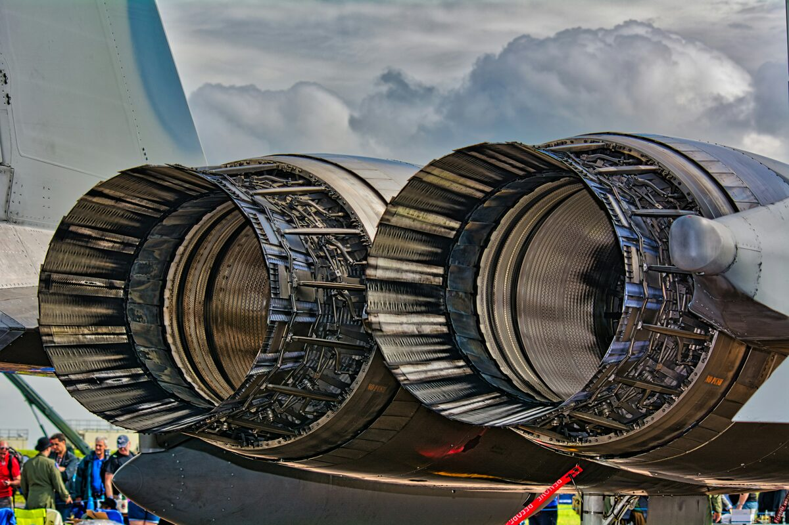
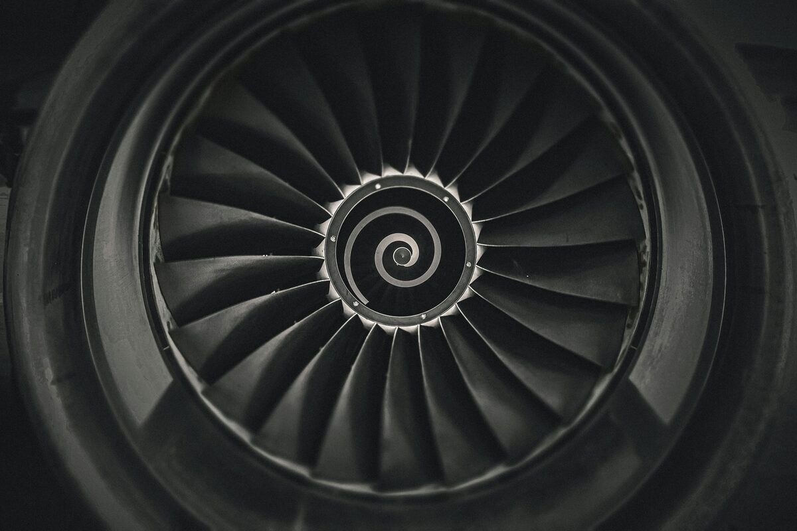

A comprehensive thermodynamic evaluation of a four-cylinder, naturally aspirated Perkins 404D-22 diesel engine under varying speed (1400, 1800, 2000 RPM) and load (50%, 100%) conditions. The analysis covered engine performance characterisation, energy balance, and PV cycle reconstruction from experimental dynamometer data.

Brake power, torque, BMEP, specific fuel consumption (SFC), air-fuel ratio, volumetric efficiency, and thermal efficiency were calculated and plotted across all six operating points. The analysis identified 1800 RPM as the optimal operating point where SFC was minimised and thermal efficiency peaked at approximately 30.4% at 50% load. Mechanical efficiency decreased from 91.1% at 1400 RPM to 85.0% at 2000 RPM, consistent with increasing friction and pumping losses at higher speeds.
At full load, the distribution of fuel input energy was quantified: approximately 50% rejected to the coolant system, 11% lost through exhaust gases, 29% converted to useful brake power, and 10% unaccounted for (attributed to radiation, convection, mechanical friction, and pumping losses). This energy audit confirmed that coolant rejection is the dominant loss mechanism in naturally aspirated diesel engines at these operating conditions.
Compression and expansion strokes were isolated from experimental cylinder pressure data. Polytropic coefficients were fitted using ln(P) vs ln(V) regression, achieving R squared values exceeding 0.999. Idealised diesel cycles were then constructed and overlaid against the measured PV diagrams.
The comparison revealed that the idealised cycle significantly underestimates indicated work because it assumes constant-pressure heat addition, whereas real combustion involves rapid premixed burning followed by diffusion-controlled combustion. This produces a larger cutoff ratio and higher peak pressures: approximately 6.1 MPa measured versus 4.1 MPa idealised at 1400 RPM.